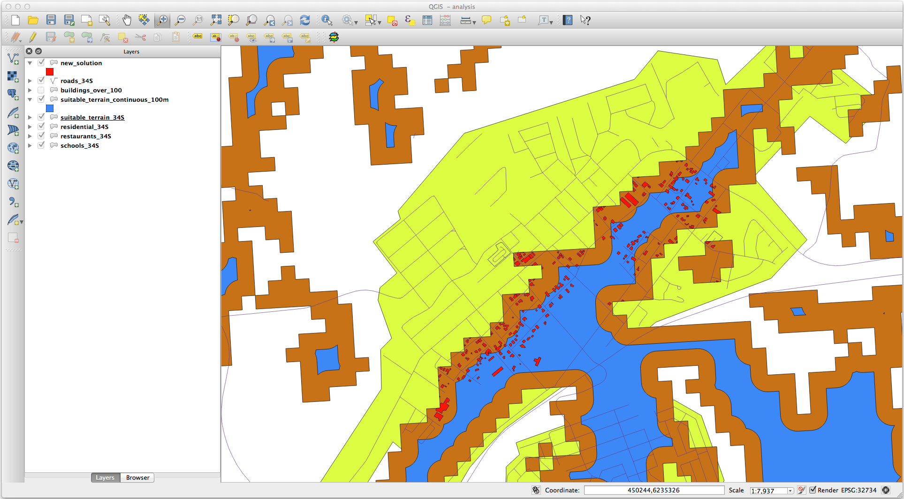
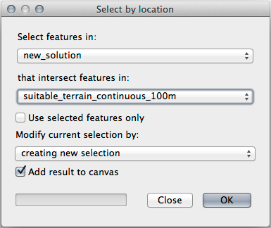

8.2. သင်ခန်းစာ- လေ့လာဆန်းစစ်မှုများကို ပေါင်းစပ်ခြင်း (Lesson: Combining the Analyses)
Raster analysis ၏ vector ပြောင်းလဲထားသော ရလာဒ်များကို အသုံးပြုခြင်းသည် သင့်လျော်သောမြေပြင် (suitable terrain) ပေါ်ရှိ အဆောက်အဦများကိုသာ ရွေးချယ်နိုင်စေပါသည်။
ဤသင်ခန်းစာအတွက် ရည်မှန်းချက်- သင့်လျော်သောအကွက်များကို ရွေးထုတ်ရာတွင် vector ပြောင်းလဲထားသော terrain ရလာဒ်များကို အသုံးပြုတတ်စေရန်
8.2.1. ★★☆ မိမိကိုယ်တိုင်ကြိုးစားကြည့်ပါ- (Try Yourself:)
လက်ရှိမြေပုံကို သိမ်းဆည်းပါ (
raster_analysis.qgs)။အစောပိုင်း vector analysis ပြုလုပ်စဉ်က ဖန်တီးထားသော မြေပုံကို ဖွင့်ပါ (
analysis.qgsဖိုင်ဖြင့် သိမ်းဆည်းခဲ့ပါသည်)Layers panel ထဲတွင် အောက်ပါ layer များကို ဖွင့်ပေးပါ-
hillshade
solution (သို့မဟုတ် buildings_over_100)
ထို layer များအပြင်
suitable_terrain.shpdataset ကိုလည်း ထည့်သွင်းပါ။အချို့ layer များကို မတွေ့လျှင်
exercise_data/residential_development/ထဲတွင် ရှာဖွေပါ။Intersection tool () ကိုအသုံးပြုပြီး suitable_terrain layer နှင့်ထိဖြတ်နေသော အဆောက်အဦများသာ ပါဝင်သည့် vector layer အသစ်တစ်ခုဖြစ်သော
new_solution.shpကို ဖန်တီးပါ။
ယခုဆိုလျှင် အဆောက်အဦအချို့ကိုသာ ပြသနေသော layer တစ်ခုရှိသင့်ပြီဖြစ်သည်၊ ဥပမာ-

8.2.2. ★★☆ မိမိကိုယ်တိုင်ကြိုးစားကြည့်ပါ- ရလာဒ်များကို စစ်ဆေးခြင်း (Try Yourself: Inspecting the Results)
new_solution layer ထဲရှိ အဆောက်အဦတစ်ခုချင်းစီကို ရှာကြည့်ပါ။ new_solution layer ၏ သင်္ကေတများကို ဘောင်မျဉ်း (outline) များသာပါဝင်အောင် ပြောင်းလဲပြီး suitable_terrain layer နှင့် ၎င်းအဆောက်အဦများကို နှိုင်းယှဉ်ကြည့်ပါ။ အချို့အဆောက်အဦများနဲ့ပတ်သက်ပြီး သင်ဘာသတိထားမိပါသလဲ။ suitable_terrain layer ဖြင့် ထိဖြတ်နေရုံဖြင့် အဆောက်အဦအားလုံး suitable (သင့်လျော်သည်) ဖြစ်ပါသလား။ ဖြစ်သည်ဆိုလျှင် ဘာကြောင့်ပါလဲ၊ မဖြစ်ဘူးဆိုလျှင် ဘာကြောင့်ပါလဲ။ သင့်အနေဖြင့် မည်သည့်အဆောက်အဦများကို suitable မဖြစ်ဘူးလို့ ယူဆပါသလဲ။
အဖြေ
new_solution layer ထဲရှိ အချို့ အဆောက်အဦများသည် Intersection tool ဖြင့် ဖြတ်ထားခြင်းခံထားရသည်ကို သင်သတိထားမိနိုင်ပါသည်။ ဆိုလိုသည်မှာ suitable terrain ပေါ်တွင် အဆောက်အဦ၏တစ်စိတ်တပိုင်းသာ ကျရောက်နေခြင်းဖြစ်သည်။ ထို့ကြောင့် အဆိုပါ အဆောက်အဦများကို သတိထားပြီး dataset မှ ဖယ်ရှားပစ်နိုင်ပါသည်။
8.2.3. ★★☆ မိမိကိုယ်တိုင်ကြိုးစားကြည့်ပါ- Analysis ကို ပိုမိုကောင်းမွန်အောင်လုပ်ခြင်း (Try Yourself: Refining the Analysis)
အချို့သော အဆောက်အဦများသည် ရလာဒ်တွင်ပါဝင်နေသော်လည်း အမှန်တကယ် suitable (သင့်လျော်) ဖြစ်သည်ကို တွေ့မြင်နိုင်ပါသည်။ ထို့ကြောင့် ယခုအခါ analysis ကို ပိုမိုကောင်းမွန်အောင်လုပ် (refine) နိုင်ပါသည်။
Analysis သည် suitable_terrain layer အတွင်း အပြည့်အဝကျရောက်သော အဆောက်အဦများကိုသာလျှင် ရလာဒ်ပြန်ထုတ်ပေးနိုင်သည်မျိုး လိုချင်တာဖြစ်ပါသည်။ ထိုသို့ဖြစ်အောင် မည်သို့လုပ်ဆောင်ရမလဲ။ တစ်ခု သို့မဟုတ် တစ်ခုထက်ပိုသော Vector Analysis tool များကိုအသုံးပြုပါ၊ အဆောက်အဦများအားလုံးသည် 100 မီတာအရွယ်အစားထက် ကျော်လွန်သည်ကို မမေ့ပါနှင့်။
အဖြေ
ယခုအချိန်တွင် analysis သည် အောက်ပါပုံစံအတိုင်း ဖြစ်သင့်ပါသည်-
အချင်းဝက် 100 မီတာရှိသော စက်ဝိုင်းဧရိယာတစ်ခုဟု ယူဆကြည့်ပါ။
If it is greater than 100 meters in radius, then subtracting 100 meters from its size (from all directions) will result in a part of it being left in the middle. အချင်းဝက် 100 မီတာထက် ကြီးလျှင်
Therefore, you can run an interior buffer of 100 meters on your existing suitable_terrain vector layer. In the output of the buffer function, whatever remains of the original layer will represent areas where there is suitable terrain for 100 meters beyond.
လက်တွေ့သရုပ်ပြရန်-
Buffer dialog ကိုဖွင့်ရန် သို့သွားပါ။
အောက်ပါပုံစံအတိုင်း သတ်မှတ်ပါ-

suitable_terrain layer ကို
10segment နှင့် buffer အကွာအဝေး-100ဖြင့် အသုံးပြုပါ။ (မြေပုံသည် Projected CRS ကိုအသုံးပြုထားသောကြောင့် အကွာအဝေးသည် အလိုအလျှောက် မီတာ ဖြင့် ဖြစ်နေပါမည်)ရလာဒ်ကို
exercise_data/residential_development/ထဲတွင်suitable_terrain_continuous100m.shpအဖြစ် သိမ်းဆည်းပါ။လိုအပ်လျှင် layer အသစ်အား မူရင်း suitable_terrain layer ၏အပေါ်သို့ ရွှေ့ပါ။
ရလာဒ်သည် အောက်ပါပုံစံအတိုင်း ဖြစ်နေပါလိမ့်မည်-
 ယခုအခါ Select by Location tool ကိုအသုံးပြုပါ ()
အောက်ပါပုံစံအတိုင်း သတ်မှတ်ပါ-
 suitable_terrain_continuous100m.shp ထဲရှိ feature များနှင့် ထိဖြတ်နေသော new_solution ထဲရှိ feature များကို ရွေးချယ်ပါ။
ရလာဒ်သည် အောက်ပါအတိုင်းဖြစ်သည်-

အဝါရောင် အဆောက်အဦများသည် ရွေးချယ်ခံထားရသည်များဖြစ်သည်။ အချို့အဆောက်အဦများသည် suitable_terrain_continuous100m layer အသစ်၏ အပြင်ဘက်တွင် တစ်စိတ်တပိုင်းကျရောက်နေသော်လည်း ၎င်းတို့သည် မူရင်း suitable_terrain layer အတွင်းတွင် ကောင်းမွန်စွာကျရောက်နေပြီး ကျွန်ုပ်တို့၏ လိုအပ်ချက်များနှင့် ကိုက်ညီပါသည်။
ရွေးချယ်ထားသည်များကို
exercise_data/residential_development/အောက်တွင်final_answer.shpအနေဖြင့် သိမ်းဆည်းပါ။
8.2.4. နိဂုံးချုပ် (In Conclusion)
ယခုဆိုလျှင် သင့်အနေဖြင့် မူလမေးခွန်းကို အဖြေရှာဖွေပြီးဖြစ်ပါသည်။ မည်သည့်အပိုင်းများကို တိုးတက်အောင် လုပ်ဆောင်ရမည်ဆိုသည်နှင့်ပတ်သက်သော အကြံပြုချက်အတွက် သင့်အမြင်ကို ဖြေဆိုပေးနိုင်ပြီဖြစ်ပါသည် (Anaysis ကိုအခြေပြုသည့် အကြောင်းအရင်းများ)
8.2.5. နောက်ထပ် ဘာအကြောင်းအရာလဲ? (What’s Next?)
နောက်တစ်ပိုင်းတွင် အဆိုပါရလာဒ်များကို သင်၏ ဒုတိယ assignment အနေဖြင့် တင်ပြရပါလိမ့်မည်။